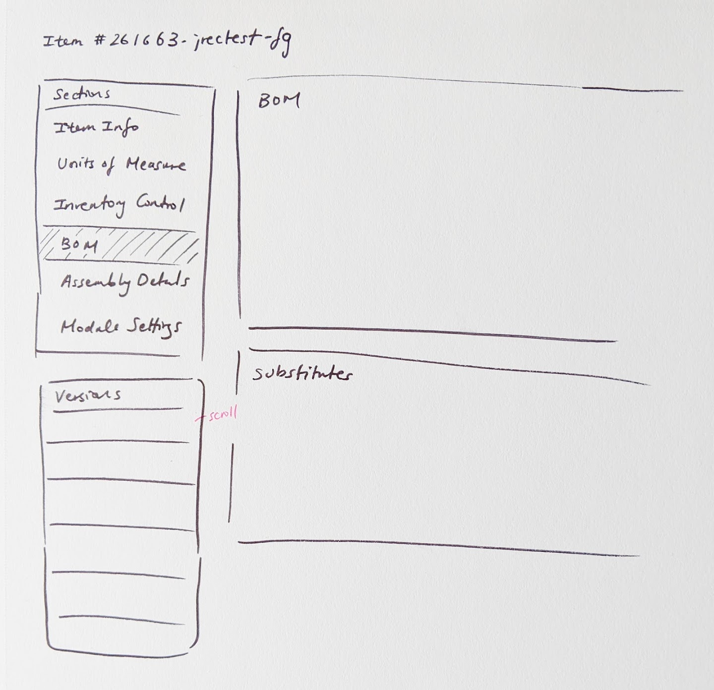

Bill of Materials Versioning
“I’d like to mention that the new BOM version control is a welcome addition. The BOM version control allows us to remove a process outside Nulogy and streamline it within the system."
- EVP of one of our customers
Impact & Results
- 100% of our customers using this feature
- Within the first month of launching, we had 4,376 versions finalized by our top 10 customers using the feature
- Within the first month of launch, an average of 257 versions were being created per day
Problem
Prior to this project, there was only one Bill of Materials per Item in our application. This caused a variety of problems when it came to our customers actually using these Items in production:
- A finished good’s contents can change slightly over time. When this change happens and the BOM is updated, the changes are propagated everywhere, meaning current production, as well as historical data records are affected (i.e. consumption, reconciliation)
- A finished good sometimes can be built in different ways, meaning they require slightly different BOMs, but the final product is actually the same finished good. Currently customers are using workarounds like substitutes and optionals to manage this, but this is uncontrolled and prone to errors.
- Some facilities have machines on their lines. Depending on the machine speeds, production rates will vary. In this case, the same Item Master information will not provide accurate production metrics.
We needed a way to control these changes in the application to ensure production could run smoothly. That’s why Nulogy decided to implement BOM Versioning.
+ view glossary
- hide glossary
A Bill of Materials (BOM) is a list of the raw materials, sub-assemblies, intermediate assemblies, sub-components, parts, and the quantities of each needed to manufacture a finished good (Item). In addition to BOM information, each Item contains information on weight, cost, production rates, assembly steps, and more. This information is stored in what we call the Item Master for each Item.
A BOM is specified on each Item, and that Item is tied to a production order, known as Projects in our solution. The BOM is used to determine quantities for reservations for components that are in stock, and orders for components that are not in stock. When it comes time to actually produce the finished good, the BOM is used to determine the ratio of materials that goes into the good.
Solution
Bill of Materials Versioning allows customers to run multiple projects for the same finished good Item simultaneously by using different versions, providing a controlled way to make and manage changes to the BOM.
Create a separate space for versioned information
Each component of the Item Master is divided into its own section, to separate versioned information from non-versioned components.


Provide a space for changes
By default, users are taken to the draft version of the Bill of Materials when they navigate to the section, where they can easily make changes without affecting production in progress.
Make finalizing versions flexible
A version name can be specified, or users can finalize using the default name provided.

Make it easy to see and find versions
Versions are in reverse chronological order, so users can easily find the most recent version.
My role
I was the sole product designer a team comprising of a Product Manager, 4 Developers, and 1 Agile Tester.
Tools


Approach
Understand the current state
BOM Versioning has been a highly requested feature by many of our existing customers for a long time. It was prioritized because many of our more regulated customers (GxP) required a better way to control changes to the BOM in order to continue using our solution. As a result, we spent a lot of time interviewing our customers to understand how they were currently using the Item Master and Projects in production. Once development began, we set up constant touchpoints with our customers to demo the feature as it was being built.
Phase 1: Empathize & Define
Who are the key players and what are they trying to accomplish?
I interviewed 3 different customers to understand their current workflow, and also gathered information from internal resources; our consultants who implement and train users on the software have invaluable information about what users are trying to do.
+ view questions
- hide questions
- Can you walk through how your current process is like from when you receive an order to when that order becomes final and production is ready to start?
- When is the order considered final?
- How do you ensure its final? For example, are there signatures required on the document?
- What information must remain consistent when the order is final? For example, the BOM or any Project information?
- What happens if the information must change when production has started? What is this process like?
- What happens when the information changes for a new order? Do you create a new set of paperwork that needs to be signed off?
Using responses from the interviews, I generated a persona for the Production Planner by narrowing down the findings into three categories using the job-to-be-done, pains, and gains value proposition.
How can we help our users accomplish their goals?
After defining the Production Planner persona, I created a workflow to capture how the Production Planner would flow through the system with versioning introduced.


Phase 2: Ideate
Identify what requires redesign
Before we were able to even approach versioning on the Item Master, we looked at the Item Master in its existing state. There was a lack of thought behind the organization of information that trying to introduce versioning without a redesign of the Item Master would crowd the page even more. The old Item Master is depicted below:
Understand the scope of possible changes
One thing to note here is that the Item Master redesign was scope that we added to the BOM versioning project just because of the usability issues it would cause by trying to introduce versioning without redesigning the page. For that reason, and because we were working with dated front end frameworks, I was very limited in the amount of interaction changes I was able to make about how the page worked already. Many of the changes I made to the Item Master were organizational, without changing too much how to edit and manage the data on the page.
Card sorting activity
To understand how the Item Master information should be organized, I ran a card sorting activity with 2 of our implementation consultants, and a global support representative - all of whom have extensive experience both setting up and training our customers on the Item Master.
Participant 1: Rob (Implementation Consultant)


Participant 2: Melissa (Global Support Representative)


Participant 3: Luis (Implementation Consultant)


Using the results from the card sorting activity, I ended up with a breakdown depicted on the right hand side - the original organization is indicated on the left:
Some things to note when comparing and contrasting with the Item Master before is the categorization of many attributes that were just stuck into the “General Information” section because they were added in hindsight, as well as the addition of the “Module Settings” category, that matters only when customers have the module enabled.
Re-organizing the layout
Once I had the categories defined, I came up with a few options for displaying the data. Since we were only versioning Bill of Materials information, I needed to make sure there was a clear separation between that section; and I needed to think about how versioning would fit into the page.
I settled with a left-hand navigation for the Item Master information, which left space nicely to put a navigation for the versions underneath.
Phase 3: Gathering Feedback
Throughout the design process, I had regular check-ins with our customers as well as our internal consultants to walk through and test out things like the workflow and language. There were three major takeaways from these sessions.
Warning for unsaved changes when moving between sections
One piece of feedback that was surfaced was that because planners are often managing multiple tasks at once, and need to always keep an eye on what is happening on the production floor, they can often become distracted in the midst of making changes to each section. As a result, they can lose their changes easily if they navigate away from the page or to another section. I was really happy this came up as feedback because it gave me user justification to push the team for usability improvements on top of maintaining existing behaviour. To address this, I added a pop up for unsaved changes if users were navigating away from the section or page.
Emphasize that finalized versions cannot be edited
Once a version is finalized, it cannot be changed or deleted. Because of this finality, I thought it important that users be made aware of this. I placed descriptive help text under the Version Name field to convey this message, however users were still finalizing the versions without realizing this. To make sure they were very aware of the consequences when finalizing, I added a confirmation modal as a last step to creating the version, so users had to explicitly agree to it.
Language
When looking at other versioning systems in ERP software, a well known software used language such as “commit” to describe versions. However, we found that although this was not causing confusion to users when demonstrating the feature, in discussions with the design team regarding language, we wanted to use more commonly used and understood language, since the word “commit” in a software context is often thought of in a programming context. We tossed around alternative words such as: finalize, submit, and publish.
Ultimately, I settled on Finalize because we used the word “Publish” in our Scheduling module, and it had a slightly different meaning, since you always publish to overwrite the existing schedule. “Submit” was not specific enough, since the same word could be used to refer to things like submitting a form, and it didn’t quite capture the meaning of creating another version that could be used in downstream projects.